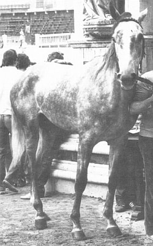

|
BELLINO II
Corsi 3, vinti nessuno
anno di nascita: 1977
Sono esistiti pure due fantini omonimi (vedi) e (vedi)
Il cavallo forse dai due nomi, cresciuto nel viterbese, rappresentò una delle beffe più clamorose negli
acquisti equini nel senese. Bellino (probabilmente non era il suo nome originale) una volta "consumato" per
Piazza e ormai destinato ad essere scartato, come dimostrano i palii del 1983, pare che fosse stato venduto sotto il nome di
Ciriaco, un grigio sardo che era atteso nel senese. Detto questo, non sapremo mai con precisione se "Bellino" e
"Ciriaco" fossero o meno due cavalli "diversi". L’esame fotografico di alcuni particolari, indirizzarono taluni
a considerarli come un unico soggetto, tanto più che nello straordinario del 1986, il cavallo venne presentato
nuovamente con il suo nome precedente. Dei Palii corsi, il primo, quello del luglio 1981 nella Giraffa
con il Casula, fu il migliore, avendo condotto la corsa per oltre due giri. Scattante dai canapi e ben
preciso, Bellino fu però, in molte occasioni, interpretato con troppa sufficienza e non seppe esprimere
in corsa tutte quelle qualità che erano state saggiamente presentate al suo debutto dal Casula.

ALTRI CAPITOLI INERENTI A QUESTO ARGOMENTO:
Omonimie fra cavalli e fantini
Proprietari dei cavalli vittoriosi
I cavalli dal 1945 al 1999
I cappotti dei cavalli
I cavalli vincenti del Novecento
I cavalli vittoriosi all'esordio
Per tornare all'indice delle foto
|